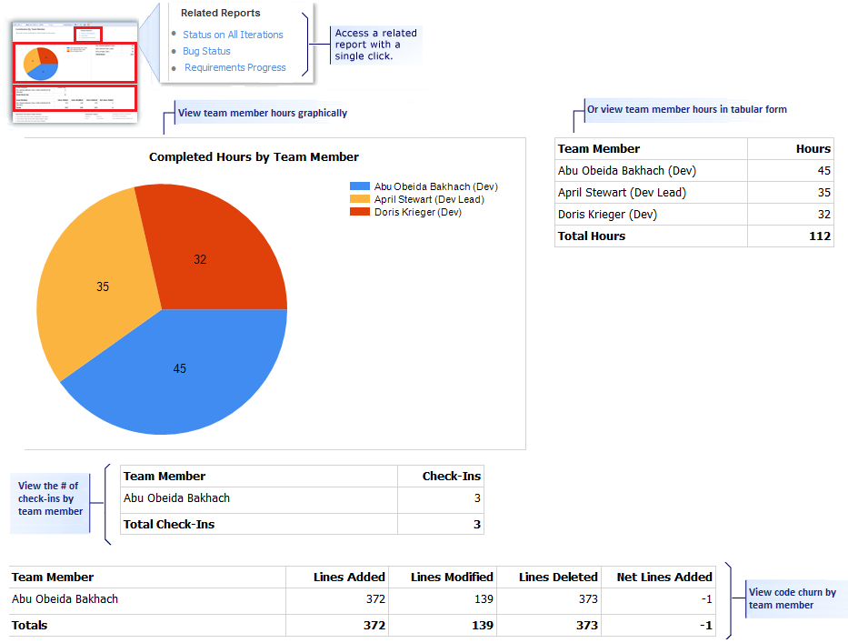

The Contribution by Team Member Report displays the various contributions by team members for a specified iteration and area or entire project. For information about how to open this report, refresh the data, or manage reports, see Reports (GovDev).
|
|
|---|
|
This report requires that the team project collection that contains your team project
was provisioned with SQL Server Reporting Services. This report is not available
if
|
|
In this topic |
You can use this report to answer the following questions :
|
Required Permissions
To view the report, you must be assigned or belong to a group that has been assigned the Browser role in Reporting Services. For more information, see Add Users to Team Projects or Managing Permissions.
 Data
in the Report
Data
in the Report
The Contribution by Team Member Report presents a snapshot of the hours and code churn for the specified iteration and area as the following illustration shows:
This report displays the following information:
Work Effort
-
Completed Hours by Team Member: A graph with numeric value that shows the set of hours logged by each team member.
-
Number of changeset checked-in by Team Member: A numeric value that shows the number of changesets logged by each team member.
-
Code churn by Team Member: A numeric table showing the lines of code (LOC) added, modified and deleted by each team member.
Required
Activities for Tracking Progress
For the Contribution by Team Member Report to be useful and accurate, the team must perform the following activities:
-
Specify and update the Completed and Remaining fields for each task as the team works on it.
-
Associate the code check-in with the task the code supports.
-
(optional) Specify the Iteration and Area paths for each work item if you want to filter by those fields.
Filtering
the Report
You can filter the Contribution by Team Member Report to show statistics only for the iterations or product areas that you specify.
To specify which work tiems appear in the report
-
In the Iteration or Area list, select the check box of each iteration or product area to include.
-
Click View Report to refresh the report based on the new filter criteria.